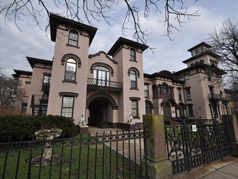
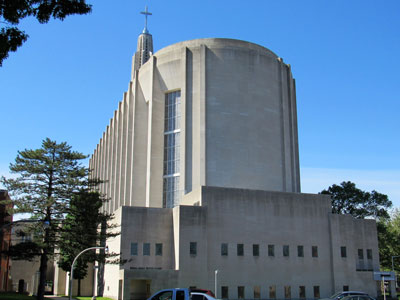
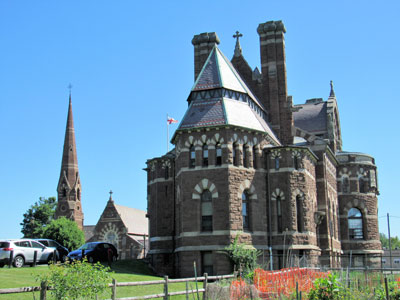
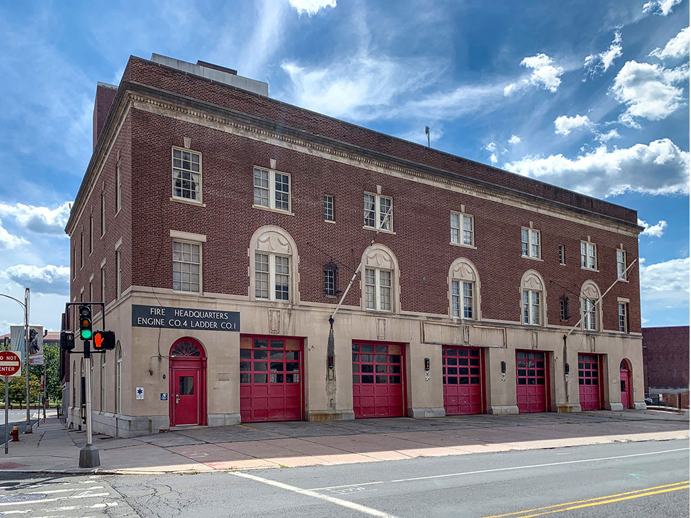
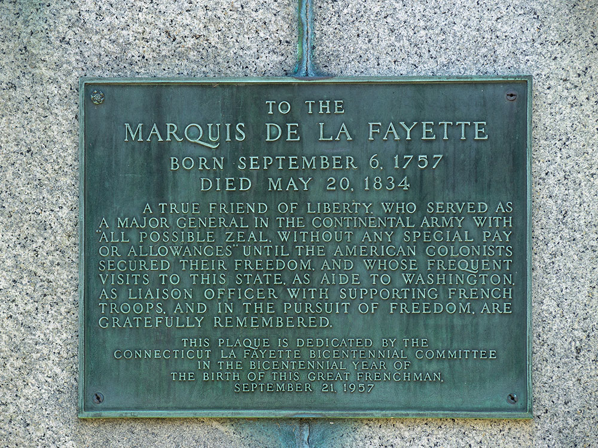
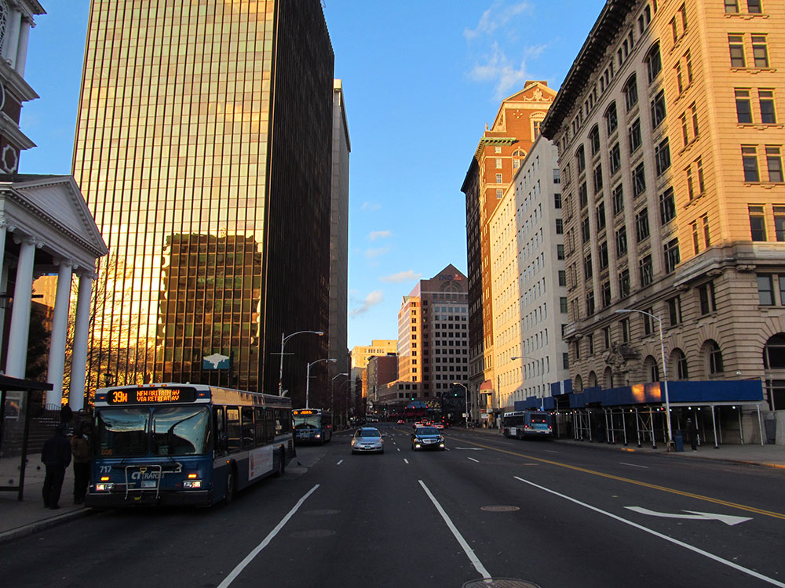

Capital city of Connecticut, founded in 1635 and is among the oldest cities in the United States and is home to the country's oldest public art museum (Wadsworth Atheneum), the oldest publicly funded park (Bushnell Park), the oldest continuously published newspaper (the Hartford Courant), and the second-oldest secondary school (Hartford Public High School).
Places to See in Hartford, CT

Magicpiano, CC BY-SA 4.0, via Wikimedia Commons; Image Size Adjusted
Armsmear
Italianate historic mansion originally built as a private family estate, later adapted for residential use, and set within landscaped grounds reflecting mid-19th-century design.

Kenneth C. Zirkel, CC BY-SA 4.0, via Wikimedia Commons; Image Size Adjusted
Bushnell Park
Landscaped urban green space featuring sweeping lawns, historic monuments, a Victorian carousel, and gently curving paths designed for recreation, gatherings, and cultural events.

Farragutful, CC BY-SA 4.0, via Wikimedia Commons; Image Size Adjusted
Cathedral of St. Joseph
Modern Roman Catholic cathedral distinguished by a soaring limestone tower, monumental art, and expansive stained-glass windows designed to create a dramatic, light-filled worship space.

Farragutful, CC BY-SA 4.0, via Wikimedia Commons; Image Size Adjusted
Church of the Good Shepherd and Parish House
Gothic Revival stone church and adjoining parish house commissioned as a 19th‑century memorial, featuring a soaring spire, richly detailed masonry, and symbolic architectural craftsmanship.

Farragutful, CC BY-SA 4.0, via Wikimedia Commons; Image Size Adjusted
Connecticut Museum of Culture and History
History museum featuring exhibitions, archives, artifacts, and folk arts collections that explore the cultural heritage, stories, and people of Connecticut from colonial times to the present.
Ragesoss, CC BY-SA 4.0, via Wikimedia Commons; Image Size Adjusted
Connecticut State Capitol
Ornate 19th-century government building crowned with a gold-leaf dome, featuring richly decorated interiors, legislative chambers, and historic artwork reflecting state governance.
Overview
Hartford is the capital of Connecticut, on the Connecticut River in the north-central part of the state, and it has long been known as the "Insurance Capital of the World" because it is the home of companies such as The Hartford, Aetna, and Travelers. It is one of the oldest cities in the United States, with a historic downtown, a gold-domed Capitol, and the oldest continuously operating public art museum in the country. Once the home of authors Mark Twain and Harriet Beecher Stowe, it is also a city of literary history.
Visitors come to Hartford for the Connecticut State Capitol and Bushnell Park, for the Wadsworth Atheneum Museum of Art, and for the Mark Twain House and Harriet Beecher Stowe Center in the Nook Farm neighborhood. They also come for the Connecticut Museum of Culture and History, the Old State House, Elizabeth Park's rose garden, and a food scene that includes the city's Caribbean, Portuguese, and Brazilian restaurants.
History

Magicpiano, CC BY-SA 4.0, via Wikimedia Commons; Image Size Adjusted

Armsmear
Italianate historic mansion originally built as a private family estate, later adapted for residential use, and set within landscaped grounds reflecting mid-19th-century design.
Kenneth C. Zirkel, CC BY-SA 4.0, via Wikimedia Commons; Image Size Adjusted

Bushnell Park
Landscaped urban green space featuring sweeping lawns, historic monuments, a Victorian carousel, and gently curving paths designed for recreation, gatherings, and cultural events.

Farragutful, CC BY-SA 4.0, via Wikimedia Commons; Image Size Adjusted

Cathedral of St. Joseph
Modern Roman Catholic cathedral distinguished by a soaring limestone tower, monumental art, and expansive stained-glass windows designed to create a dramatic, light-filled worship space.
Farragutful, CC BY-SA 4.0, via Wikimedia Commons; Image Size Adjusted

Church of the Good Shepherd and Parish House
Gothic Revival stone church and adjoining parish house commissioned as a 19th‑century memorial, featuring a soaring spire, richly detailed masonry, and symbolic architectural craftsmanship.

Farragutful, CC BY-SA 4.0, via Wikimedia Commons; Image Size Adjusted
Connecticut Museum of Culture and History
History museum featuring exhibitions, archives, artifacts, and folk arts collections that explore the cultural heritage, stories, and people of Connecticut from colonial times to the present.
Ragesoss, CC BY-SA 4.0, via Wikimedia Commons; Image Size Adjusted

Connecticut State Capitol
Ornate 19th-century government building crowned with a gold-leaf dome, featuring richly decorated interiors, legislative chambers, and historic artwork reflecting state governance.
Overview
Hartford is the capital of Connecticut, on the Connecticut River in the north-central part of the state, and it has long been known as the "Insurance Capital of the World" because it is the home of companies such as The Hartford, Aetna, and Travelers. It is one of the oldest cities in the United States, with a historic downtown, a gold-domed Capitol, and the oldest continuously operating public art museum in the country. Once the home of authors Mark Twain and Harriet Beecher Stowe, it is also a city of literary history.
Visitors come to Hartford for the Connecticut State Capitol and Bushnell Park, for the Wadsworth Atheneum Museum of Art, and for the Mark Twain House and Harriet Beecher Stowe Center in the Nook Farm neighborhood. They also come for the Connecticut Museum of Culture and History, the Old State House, Elizabeth Park's rose garden, and a food scene that includes the city's Caribbean, Portuguese, and Brazilian restaurants.
The Dutch built a trading post, the House of Hope, on the Connecticut River in 1623, and in 1636 the Reverend Thomas Hooker led English settlers from Massachusetts to found Hartford. In 1639, the Fundamental Orders of Connecticut, often called the first written constitution in the Western world, were adopted here, and the city was a leading center for shipping, manufacturing, and finance. Samuel Colt established his firearms factory in the city in 1855, and the Colt Armory's blue onion dome still stands. In the twentieth century insurance became the dominant industry, and it shared the capital role with New Haven until 1875, when Hartford became the sole capital.
Sightseeing and Popular Landmarks
The Connecticut State Capitol, completed in 1879, is a High Victorian Gothic building with a gold-leaf dome, and it overlooks Bushnell Park, the oldest publicly funded park in the country, with its carousel and Soldiers and Sailors Memorial Arch. The Cathedral of St. Joseph, the Church of the Good Shepherd, and the Armsmear estate of the Colt family are other landmarks, and the Old State House, designed by Charles Bulfinch in 1796, is one of the oldest in the nation.
Culture and Museums
The Wadsworth Atheneum, founded in 1842, has a collection that ranges from Renaissance and Baroque paintings to modern art, and the Mark Twain House & Museum preserves the author's Gothic mansion, where he wrote Adventures of Huckleberry Finn. The Harriet Beecher Stowe Center is next door, and the Connecticut Museum of Culture and History covers the state's heritage. The Bushnell Center for the Performing Arts hosts Broadway tours, and the Connecticut Science Center is a major attraction for families.
Parks
Bushnell Park, designed in 1861, is the city's central green space, and Elizabeth Park, in nearby West Hartford, has the oldest municipal rose garden in the United States, with more than 15,000 rose bushes. Riverfront Recapture has parks and trails along the Connecticut River, and the Hartford Riverwalk connects downtown to the water. Talcott Mountain State Park, with views of the river valley from Heublein Tower, is a short drive away.
Seasons and Weather
Hartford has a humid continental climate with four distinct seasons. Summers are warm and humid, with highs in the 80s°F, and winters are cold, with highs in the 30s°F and about 45 inches of snow. Spring and fall are the most pleasant seasons, with colorful foliage in October, and the area is occasionally affected by nor'easters and tropical storm remnants.
This article uses material from Wikipedia as well as information from official tourism and institutional sources. Key references include Connecticut Office of Tourism, Greater Hartford Tourism District, Wadsworth Atheneum, Mark Twain House & Museum, Connecticut Museum of Culture and History, and National Weather Service Boston/Norton. Wikipedia material is from the article "Hartford, Connecticut", and is available under the Creative Commons Attribution-Share-Alike License 3.0.





